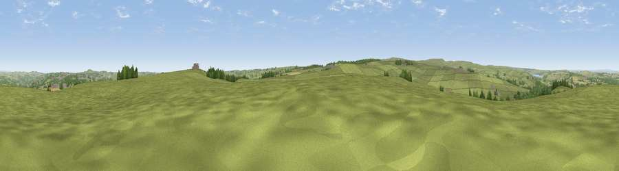

Viewpoint near Castleside
#21824 in England · top 52% of its area beats it · near CastlesideThe view, rendered

A 360° render of this exact spot computed from the terrain model, tree cover and land cover — summer colours, afternoon light, calibrated against photographs of famous viewpoints. Real trees, hedges and buildings will differ in detail.
The panorama
Grey silhouette: terrain skyline in each direction (720 bearings, Earth curvature and refraction included). Dashed green: skyline with trees (+15 m) and buildings (+8 m) as obstacles. Blue strip: how far the ground is visible on each bearing.
Where the view opens
Wedge length = distance to the farthest visible ground on that bearing (vegetation-aware). Rings at 10, 25 and 50 km.
What fills the view
88% grassland · 6% woodland · 5% cropland · 2% built-up
Angular shares of the visible panorama (visual magnitude), not map area. Landscape diversity 0.22 (0–1 Shannon).
Key numbers
More beautiful places nearby
The staircase of upgrades: each row has a higher view potential than everything closer. Driving times are estimates from straight-line distance, calibrated against real road routing — check an actual route before setting out.
| Place | Direction | Drive | Score |
|---|---|---|---|
| Viewpoint near Castleside | N · 0 km | ~1 min | 55.9 |
| Viewpoint near Wolsingham | S · 7 km | ~14 min | 63.0 |
| Viewpoint near Edmundbyers | W · 7 km | ~14 min | 65.0 |
| Collier Law | SW · 8 km | ~16 min | 71.7 |
| Pontop Pike | NE · 10 km | ~19 min | 77.8 |
| Little Dun Fell | WSW · 40 km | ~59 min | 78.4 |
| Cross Fell | WSW · 41 km | ~60 min | 78.7 |
| Viewpoint near Rothbury | N · 52 km | ~73 min | 81.1 |
54.81757, -1.88442 · source: screening · position refined by local search. Computed location — check access rights before visiting.